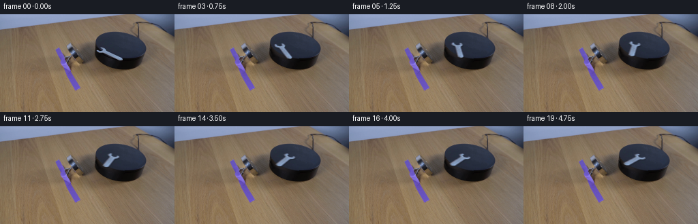
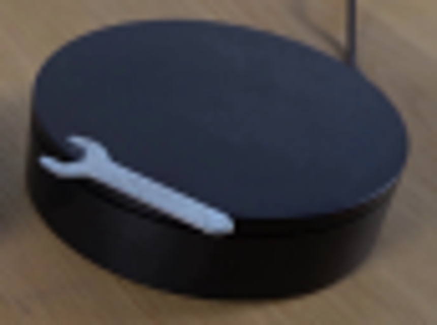
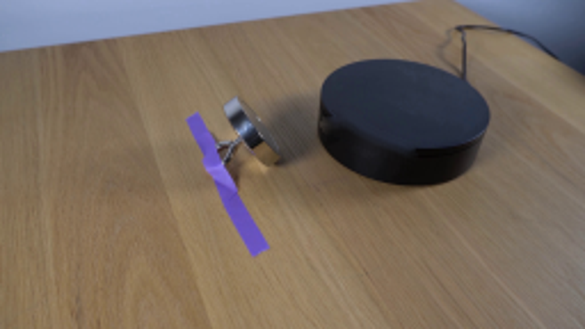
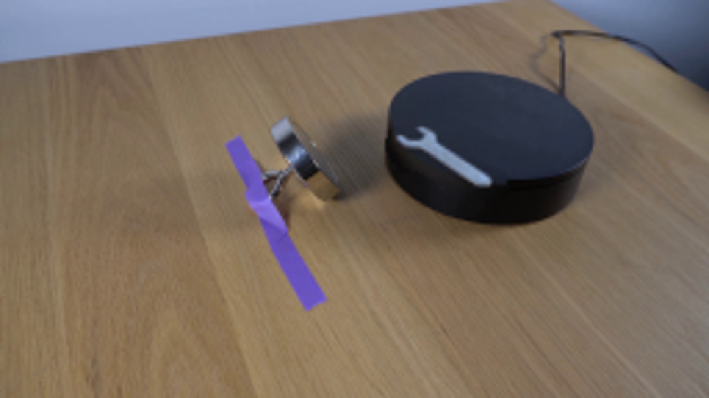
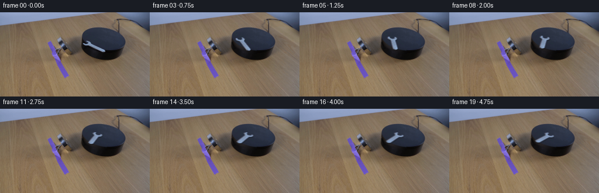
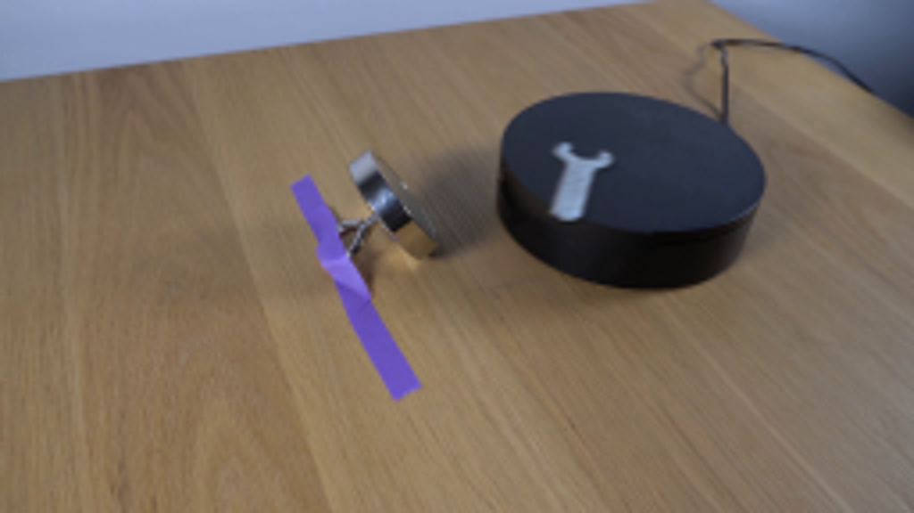

CODING AGENTS AS PIXEL WORLD MODELS
traex/GPT-6.1-Sol · 0100
点击播放 · 原生 RGB 像素
逐轮保存的候选
回放视频、检查图与代码变化。
每份候选均可单独播放。实际图片检查记录在下方工具轨迹中。
候选 01播放与检查图
点击播放 · 原生 RGB 像素
展开代码变化
--- 上一保存版本
+++ 本次保存版本
@@ -0,0 +1,123 @@
+from pathlib import Path
+import cv2
+import numpy as np
+from PIL import Image, ImageDraw
+from scipy.ndimage import gaussian_filter
+import artifact_io
+
+ROOT = Path(__file__).resolve().parent
+
+def make_assets(im):
+ H,W = im.shape[:2]
+ yy,xx=np.mgrid[:H,:W].astype(float)
+ # Camera projection of the circular horizontal top.
+ tilt=np.deg2rad(9.37)
+ P=np.array([[np.cos(tilt),-0.535*np.sin(tilt)],
+ [np.sin(tilt), 0.535*np.cos(tilt)]])
+ center=np.array([176.78,46.065])
+ q=np.stack([xx-center[0], yy-center[1]],axis=-1)@np.linalg.inv(P).T
+ rr=np.sqrt(np.sum(q*q,axis=-1))
+ mask=np.zeros((H,W),np.uint8)
+ polygon=np.array([(140,47),(145,46),(153,47),(158,50),(162,54),
+ (182,62),(183,70),(177,72),(162,67),(149,61),(141,58),(139,53)],np.int32)
+ cv2.fillPoly(mask,[polygon],255)
+ clean=cv2.inpaint(im,mask,5,cv2.INPAINT_NS).astype(float)
+ # Sample the unobstructed top to reconstruct its low-contrast illumination.
+ u=(xx-176.78)/37; v=(yy-46.065)/20
+ features=np.stack([np.ones_like(u),u,v,u*u,u*v,v*v],-1)
+ sample=(rr<35)&(mask==0)
+ top=features@np.linalg.lstsq(features[sample],im[sample],rcond=None)[0]
+ # Elliptical front edge and the stationary cylindrical side below it.
+ a,b=37.,19.8
+ # Equation A*x^2 + B*x*y + C*y^2 = 1.
+ T=np.linalg.inv(P)/37.
+ E=T.T@T
+ dx=xx-center[0]
+ disc=(E[0,1]*dx)**2-E[1,1]*(E[0,0]*dx*dx-1)
+ front=center[1]+(-E[0,1]*dx+np.sqrt(np.maximum(disc,0)))/E[1,1]
+ depth=(yy-front)/15
+ fside=np.stack([np.ones_like(u),u,u*u,u*u*u,depth,u*depth,depth*depth],-1)
+ side_samples=(disc>0)&(yy>front+2.0)&(yy<front+13)&(xx>142)&(xx<206)&(mask==0)
+ side=fside@np.linalg.lstsq(fside[side_samples],im[side_samples],rcond=None)[0]
+ side=np.clip(side,7,40)
+ # The polished lip remains a dark narrow band between top and side.
+ lip=4*np.exp(-((yy-front-0.45)/0.85)**2)
+ side=np.maximum(4,side-lip[...,None])
+ wt=0.5*(1+np.tanh((front-yy-0.05)/0.6))
+ model=top*wt[...,None]+side*(1-wt[...,None])
+ noise=np.random.default_rng(41).normal(0,.65,(H,W,1))
+ model+=noise
+ # Keep the original side where it is already clean; use the photometric
+ # model principally to reconstruct the sharp rim hidden by the wrench.
+ patch=mask>0
+ clean[patch]=model[patch]*.88+clean[patch]*.12
+ # Silver foreground matte. Only the small wrench is mobile.
+ support=np.zeros((H,W),np.uint8)
+ outline=np.array([(142,52),(146,53),(150,52),(150,51),(147,49),(148,48),
+ (153,49),(157,51),(158,54),(163,56),(176,62),(180,64),(181,67),
+ (177,68),(164,63),(155,59),(151,57),(146,57),(142,55),(141,53)],np.int32)
+ cv2.fillPoly(support,[outline],255)
+ support=cv2.GaussianBlur(support.astype(float)/255,(3,3),.5)
+ # Infer antialiasing coverage against the surface rather than rotating
+ # any black platform pixels with the tool.
+ alpha=np.clip((im[:,:,2].astype(float)-clean[:,:,2])/(140-clean[:,:,2]),0,1)*support
+ alpha[alpha<.025]=0
+ col=(im.astype(float)-clean*(1-alpha[...,None]))/np.maximum(alpha[...,None],.01)
+ col=np.clip(col,0,255)
+ return clean,alpha,col,P
+
+
+def generate():
+ original=np.asarray(Image.open(ROOT/'first_frame.png').convert('RGB'))
+ clean,alpha,col,P=make_assets(original)
+ # Rotate in the horizontal plane, not in the foreshortened image plane.
+ pivot=np.array([162.5,56.9])
+ H,W=alpha.shape
+ scale=4
+ out=[]
+ for i in range(20):
+ if i==0:
+ out.append(original.copy());continue
+ t=i/4
+ # A smooth magnetic torque turns the wrench clockwise; the slight
+ # inward settling keeps both ends supported on the platform surface.
+ theta=np.deg2rad(105)*(1-np.exp(-t/2.0))
+ shift=np.array([2.,-6.2])*(1-np.exp(-t/.8))
+ rot=np.array([[np.cos(theta),-np.sin(theta)],[np.sin(theta),np.cos(theta)]])
+ A=P@rot@np.linalg.inv(P)
+ tr=pivot+shift-A@pivot
+ aff=np.c_[A,tr]
+ # Supersampling avoids shimmer in the thin jaw and beveled edges.
+ mat=aff.copy()*scale
+ mat[:,2]+=(scale-1)/2
+ size=(W*scale,H*scale)
+ ma=cv2.warpAffine(alpha.astype(np.float32),mat,size,flags=cv2.INTER_CUBIC)
+ ma=np.clip(ma,0,1)
+ foreground=cv2.warpAffine((col*alpha[...,None]).astype(np.float32),mat,size,flags=cv2.INTER_CUBIC)
+ foreground=np.clip(foreground,0,255)
+ background=cv2.resize(clean,size,interpolation=cv2.INTER_CUBIC)
+ # A shallow contact shadow follows the wrench, with its directional
+ # offset held fixed relative to the scene illumination.
+ shadow_aff=mat.copy();shadow_aff[:,2]+=np.array([.25,1.05])*scale
+ sh=cv2.warpAffine(alpha.astype(np.float32),shadow_aff,size,flags=cv2.INTER_LINEAR)
+ sh=cv2.GaussianBlur(sh,(0,0),.55*scale)
+ # Broad soft shadow plus the thin shaded metal thickness.
+ side_aff=mat.copy();side_aff[:,2]+=np.array([.05,.40])*scale
+ edge=cv2.warpAffine(alpha.astype(np.float32),side_aff,size,flags=cv2.INTER_CUBIC)
+ edge=np.clip(edge,0,1)
+ background*=1-.43*sh[...,None]
+ background=background*(1-edge[...,None]*.55)+np.array([44,49,57])*edge[...,None]*.55
+ result=background*(1-ma[...,None])+foreground
+ result=cv2.resize(result,(W,H),interpolation=cv2.INTER_AREA)
+ out.append(np.clip(np.rint(result),0,255).astype(np.uint8))
+ frames=np.stack(out)
+ # Prevent any resampling changes outside the moving tool and its old site.
+ active=np.zeros((H,W),np.uint8)
+ active[43:75,138:185]=1
+ frames[:,active==0]=original[active==0]
+ artifact_io.save(frames,ROOT)
+ Image.fromarray(np.uint8(np.clip(clean,0,255))).resize((1024,576)).save(ROOT/'.tmp/clean.png')
+ Image.fromarray(np.uint8(alpha*255)).resize((1024,576)).save(ROOT/'.tmp/alpha.png')
+
+if __name__=='__main__':
+ generate()
候选 02播放与检查图
点击播放 · 原生 RGB 像素

展开代码变化
--- 上一保存版本
+++ 本次保存版本
@@ -11,10 +11,10 @@
H,W = im.shape[:2]
yy,xx=np.mgrid[:H,:W].astype(float)
# Camera projection of the circular horizontal top.
- tilt=np.deg2rad(9.37)
- P=np.array([[np.cos(tilt),-0.535*np.sin(tilt)],
- [np.sin(tilt), 0.535*np.cos(tilt)]])
- center=np.array([176.78,46.065])
+ tilt=np.deg2rad(10.8056)
+ P=np.array([[np.cos(tilt),-0.50644*np.sin(tilt)],
+ [np.sin(tilt), 0.50644*np.cos(tilt)]])
+ center=np.array([177.25,45.3673])
q=np.stack([xx-center[0], yy-center[1]],axis=-1)@np.linalg.inv(P).T
rr=np.sqrt(np.sum(q*q,axis=-1))
mask=np.zeros((H,W),np.uint8)
@@ -23,14 +23,14 @@
cv2.fillPoly(mask,[polygon],255)
clean=cv2.inpaint(im,mask,5,cv2.INPAINT_NS).astype(float)
# Sample the unobstructed top to reconstruct its low-contrast illumination.
- u=(xx-176.78)/37; v=(yy-46.065)/20
+ u=(xx-177.25)/37.411; v=(yy-45.3673)/18.95
features=np.stack([np.ones_like(u),u,v,u*u,u*v,v*v],-1)
sample=(rr<35)&(mask==0)
top=features@np.linalg.lstsq(features[sample],im[sample],rcond=None)[0]
# Elliptical front edge and the stationary cylindrical side below it.
a,b=37.,19.8
# Equation A*x^2 + B*x*y + C*y^2 = 1.
- T=np.linalg.inv(P)/37.
+ T=np.linalg.inv(P)/37.411
E=T.T@T
dx=xx-center[0]
disc=(E[0,1]*dx)**2-E[1,1]*(E[0,0]*dx*dx-1)
@@ -50,7 +50,8 @@
# Keep the original side where it is already clean; use the photometric
# model principally to reconstruct the sharp rim hidden by the wrench.
patch=mask>0
- clean[patch]=model[patch]*.88+clean[patch]*.12
+ feather=np.minimum(cv2.distanceTransform(mask,cv2.DIST_L2,5)/2.3,1)*.98
+ clean[patch]=model[patch]*feather[patch,None]+clean[patch]*(1-feather[patch,None])
# Silver foreground matte. Only the small wrench is mobile.
support=np.zeros((H,W),np.uint8)
outline=np.array([(142,52),(146,53),(150,52),(150,51),(147,49),(148,48),
@@ -60,7 +61,7 @@
support=cv2.GaussianBlur(support.astype(float)/255,(3,3),.5)
# Infer antialiasing coverage against the surface rather than rotating
# any black platform pixels with the tool.
- alpha=np.clip((im[:,:,2].astype(float)-clean[:,:,2])/(140-clean[:,:,2]),0,1)*support
+ alpha=np.clip((im[:,:,2].astype(float)-clean[:,:,2])/np.maximum(140-clean[:,:,2],10),0,1)*support
alpha[alpha<.025]=0
col=(im.astype(float)-clean*(1-alpha[...,None]))/np.maximum(alpha[...,None],.01)
col=np.clip(col,0,255)
@@ -113,7 +114,7 @@
frames=np.stack(out)
# Prevent any resampling changes outside the moving tool and its old site.
active=np.zeros((H,W),np.uint8)
- active[43:75,138:185]=1
+ active[35:77,137:187]=1
frames[:,active==0]=original[active==0]
artifact_io.save(frames,ROOT)
Image.fromarray(np.uint8(np.clip(clean,0,255))).resize((1024,576)).save(ROOT/'.tmp/clean.png')
候选 03播放与检查图

候选 04播放与检查图
点击播放 · 原生 RGB 像素

展开代码变化
--- 上一保存版本
+++ 本次保存版本
@@ -1,8 +1,7 @@
from pathlib import Path
import cv2
import numpy as np
-from PIL import Image, ImageDraw
-from scipy.ndimage import gaussian_filter
+from PIL import Image
import artifact_io
ROOT = Path(__file__).resolve().parent
@@ -96,7 +95,7 @@
ma=np.clip(ma,0,1)
foreground=cv2.warpAffine((col*alpha[...,None]).astype(np.float32),mat,size,flags=cv2.INTER_CUBIC)
foreground=np.clip(foreground,0,255)
- background=cv2.resize(clean,size,interpolation=cv2.INTER_CUBIC)
+ background=cv2.resize(clean,size,interpolation=cv2.INTER_NEAREST)
# A shallow contact shadow follows the wrench, with its directional
# offset held fixed relative to the scene illumination.
shadow_aff=mat.copy();shadow_aff[:,2]+=np.array([.25,1.05])*scale
可观测工具轨迹
实际执行的命令与返回图片。
命令 1exit 0
/bin/bash -lc "ls -la && cat prompt.txt && printf '\\n---RULES---\\n' && cat GENERATION_RULES.md"
命令 2exit 0
/bin/bash -lc "cat artifact_io.py && python - <<'PY'
from PIL import Image
im=Image.open('first_frame.png');print(im.size);im.resize((1024,576)).save('.tmp/enlarged.png')
PY"命令 3exit 0
/bin/bash -lc "python - <<'PY'
from PIL import Image
im=Image.open('first_frame.png');im.crop((134,40,188,76)).resize((864,576)).save('.tmp/wrench.png')
import importlib.util
for n in ['numpy','scipy','cv2','PIL']:
print(n, bool(importlib.util.find_spec(n)))
PY"命令 4exit 0
/bin/bash -lc "python - <<'PY'
import numpy as np
from PIL import Image,ImageDraw
im=Image.open('first_frame.png')
x=im.crop((137,43,184,75)).resize((940,640),Image.Resampling.NEAREST)
d=ImageDraw.Draw(x)
for px in range(137,184,2):
d.text(((px-137)*20,0),str(px),fill='red')
for py in range(44,75,2):d.text((0,(py-43)*20),str(py),fill='red')
x.save('.tmp/grid.png')
a=np.array(im)
for y in range(47,70):
print(y,''.join('X' if min(a[y,x])>100 else '+' if min(a[y,x])>65 else '.' for x in range(139,182)))
PY"命令 5exit 0
/bin/bash -lc "python - <<'PY'
from PIL import Image
im=Image.open('first_frame.png');im.crop((134,22,220,86)).resize((860,640)).save('.tmp/platform.png')
PY"命令 6exit 0
/bin/bash -lc "python - <<'PY'
import numpy as np
from PIL import Image
im=np.array(Image.open('first_frame.png'))
for y in range(26,76,4):
print(y,[(x,im[y,x].tolist()) for x in [140,145,150,155,160,165,170,175,180,185,190,195,200,205,210]])
PY"命令 7exit 0
/bin/bash -lc "python - <<'PY' import cv2,numpy as np pts=np.float32([(140,44),(141,38),(146,32),(154,28),(163,26),(174,26),(190,29),(202,35),(210,42),(214,49),(211,56),(207,61),(201,64),(191,66),(181,66)]) print(cv2.fitEllipse(pts)) PY"
命令 8exit 0
/bin/bash -lc "cat > .tmp/test.py <<'PY'
import cv2,numpy as np
from PIL import Image
im=np.array(Image.open('first_frame.png'))
m=np.zeros((144,256),np.uint8)
# full wrench plus soft shadow
pts=np.array([(141,51),(144,51),(146,52),(147,50),(145,48),(150,47),(156,50),(160,54),(181,63),(182,69),(178,71),(160,65),(149,59),(142,58),(140,55)],np.int32)
cv2.fillPoly(m,[pts],255)
for method,name in [(cv2.INPAINT_TELEA,'telea'),(cv2.INPAINT_NS,'ns')]:
out=cv2.inpaint(im,m,5,method)
Image.fromarray(out).resize((1024,576)).save('.tmp/clean_'+name+'.png')
Image.fromarray(m).save('.tmp/mask.png')
PY
python .tmp/test.py"命令 9exit 0
/bin/bash -lc "cat > generate.py <<'PY'
from pathlib import Path
import cv2
import numpy as np
from PIL import Image, ImageDraw
from scipy.ndimage import gaussian_filter
import artifact_io
ROOT = Path(__file__).resolve().parent
def make_assets(im):
H,W = im.shape[:2]
yy,xx=np.mgrid[:H,:W].astype(float)
# Camera projection of the circular horizontal top.
tilt=np.deg2rad(9.37)
P=np.array([[np.cos(tilt),-0.535*np.sin(tilt)],
[np.sin(tilt), 0.535*np.cos(tilt)]])
center=np.array([176.78,46.065])
q=np.stack([xx-center[0], yy-center[1]],axis=-1)@np.linalg.inv(P).T
rr=np.sqrt(np.sum(q*q,axis=-1))
mask=np.zeros((H,W),np.uint8)
polygon=np.array([(140,47),(145,46),(153,47),(158,50),(162,54),
(182,62),(183,70),(177,72),(162,67),(149,61),(141,58),(139,53)],np.int32)
cv2.fillPoly(mask,[polygon],255)
clean=cv2.inpaint(im,mask,5,cv2.INPAINT_NS).astype(float)
# Sample the unobstructed top to reconstruct its low-contrast illumination.
u=(xx-176.78)/37; v=(yy-46.065)/20
features=np.stack([np.ones_like(u),u,v,u*u,u*v,v*v],-1)
sample=(rr<35)&(mask==0)
top=features@np.linalg.lstsq(features[sample],im[sample],rcond=None)[0]
# Elliptical front edge and the stationary cylindrical side below it.
a,b=37.,19.8
# Equation A*x"'^2 + B*x*y + C*y''^2 = 1.
T=np.linalg.inv(P)/37.
E=T.T@T
dx=xx-center[0]
disc=(E[0,1]*dx)**2-E[1,1]*(E[0,0]*dx*dx-1)
front=center[1]+(-E[0,1]*dx+np.sqrt(np.maximum(disc,0)))/E[1,1]
depth=(yy-front)/15
fside=np.stack([np.ones_like(u),u,u*u,u*u*u,depth,u*depth,depth*depth],-1)
side_samples=(disc>0)&(yy>front+2.0)&(yy<front+13)&(xx>142)&(xx<206)&(mask==0)
side=fside@np.linalg.lstsq(fside[side_samples],im[side_samples],rcond=None)[0]
side=np.clip(side,7,40)
# The polished lip remains a dark narrow band between top and side.
lip=4*np.exp(-((yy-front-0.45)/0.85)**2)
side=np.maximum(4,side-lip[...,None])
wt=0.5*(1+np.tanh((front-yy-0.05)/0.6))
model=top*wt[...,None]+side*(1-wt[...,None])
noise=np.random.default_rng(41).normal(0,.65,(H,W,1))
model+=noise
# Keep the original side where it is already clean; use the photometric
# model principally to reconstruct the sharp rim hidden by the wrench.
patch=mask>0
clean[patch]=model[patch]*.88+clean[patch]*.12
# Silver foreground matte. Only the small wrench is mobile.
support=np.zeros((H,W),np.uint8)
outline=np.array([(142,52),(146,53),(150,52),(150,51),(147,49),(148,48),
(153,49),(157,51),(158,54),(163,56),(176,62),(180,64),(181,67),
(177,68),(164,63),(155,59),(151,57),(146,57),(142,55),(141,53)],np.int32)
cv2.fillPoly(support,[outline],255)
support=cv2.GaussianBlur(support.astype(float)/255,(3,3),.5)
# Infer antialiasing coverage against the surface rather than rotating
# any black platform pixels with the tool.
alpha=np.clip((im[:,:,2].astype(float)-clean[:,:,2])/(140-clean[:,:,2]),0,1)*support
alpha[alpha<.025]=0
col=(im.astype(float)-clean*(1-alpha[...,None]))/np.maximum(alpha[...,None],.01)
col=np.clip(col,0,255)
return clean,alpha,col,P
def generate():
original=np.asarray(Image.open(ROOT/'"'first_frame.png').convert('RGB'))
clean,alpha,col,P=make_assets(original)
# Rotate in the horizontal plane, not in the foreshortened image plane.
pivot=np.array([162.5,56.9])
H,W=alpha.shape
scale=4
out=[]
for i in range(20):
if i==0:
out.append(original.copy());continue
t=i/4
# A smooth magnetic torque turns the wrench clockwise; the slight
# inward settling keeps both ends supported on the platform surface.
theta=np.deg2rad(105)*(1-np.exp(-t/2.0))
shift=np.array([2.,-6.2])*(1-np.exp(-t/.8))
rot=np.array([[np.cos(theta),-np.sin(theta)],[np.sin(theta),np.cos(theta)]])
A=P@rot@np.linalg.inv(P)
tr=pivot+shift-A@pivot
aff=np.c_[A,tr]
# Supersampling avoids shimmer in the thin jaw and beveled edges.
mat=aff.copy()*scale
mat[:,2]+=(scale-1)/2
size=(W*scale,H*scale)
ma=cv2.warpAffine(alpha.astype(np.float32),mat,size,flags=cv2.INTER_CUBIC)
ma=np.clip(ma,0,1)
foreground=cv2.warpAffine((col*alpha[...,None]).astype(np.float32),mat,size,flags=cv2.INTER_CUBIC)
foreground=np.clip(foreground,0,255)
background=cv2.resize(clean,size,interpolation=cv2.INTER_CUBIC)
# A shallow contact shadow follows the wrench, with its directional
# offset held fixed relative to the scene illumination.
shadow_aff=mat.copy();shadow_aff[:,2]+=np.array([.25,1.05])*scale
sh=cv2.warpAffine(alpha.astype(np.float32),shadow_aff,size,flags=cv2.INTER_LINEAR)
sh=cv2.GaussianBlur(sh,(0,0),.55*scale)
# Broad soft shadow plus the thin shaded metal thickness.
side_aff=mat.copy();side_aff[:,2]+=np.array([.05,.40])*scale
edge=cv2.warpAffine(alpha.astype(np.float32),side_aff,size,flags=cv2.INTER_CUBIC)
edge=np.clip(edge,0,1)
background*=1-.43*sh[...,None]
background=background*(1-edge[...,None]*.55)+np.array([44,49,57])*edge[...,None]*.55
result=background*(1-ma[...,None])+foreground
result=cv2.resize(result,(W,H),interpolation=cv2.INTER_AREA)
out.append(np.clip(np.rint(result),0,255).astype(np.uint8))
frames=np.stack(out)
# Prevent any resampling changes outside the moving tool and its old site.
active=np.zeros((H,W),np.uint8)
active[43:75,138:185]=1
frames[:,active==0]=original[active==0]
artifact_io.save(frames,ROOT)
Image.fromarray(np.uint8(np.clip(clean,0,255))).resize((1024,576)).save(ROOT/'.tmp/clean.png')
Image.fromarray(np.uint8(alpha*255)).resize((1024,576)).save(ROOT/'.tmp/alpha.png')
if __name__=='__main__':
generate()
PY
python generate.py"命令 10exit 0
/bin/bash -lc "python - <<'PY'
from PIL import Image
for i in [1,8,19]:
Image.open(f'frames/{i:02}.png').resize((1024,576)).save(f'.tmp/frame_{i}.png')
PY"命令 11exit 0
/bin/bash -lc "python - <<'PY'
from PIL import Image
import numpy as np,cv2
im=np.array(Image.open('first_frame.png'))
for x in range(140,215,3):
y=np.where((im[24:69,x,2]>45)&(im[24:69,x,0]<75))[0]+24
print(x,(y.min(),y.max()) if len(y) else None)
PY"命令 12exit 0
/bin/bash -lc "python - <<'PY' import cv2,numpy as np pts=np.float32([(182,65),(185,65),(190,65),(195,64.8),(200,64),(205,62.2),(210,59),(213,54), (214,50), (213,45),(210,41),(205,37),(200,33.5),(190,29),(180,26.5),(170,25.5),(160,26),(150,28.5),(145,32),(141,38),(140,43)]) print(cv2.fitEllipse(pts)) PY"
命令 13exit 0
/bin/bash -lc "python - <<'PY'
import generate,numpy as np
from PIL import Image
im=np.array(Image.open('first_frame.png'))
c,a,col,P=generate.make_assets(im)
y,x=np.where(a>.01);points=np.c_[x,y]
pivot=np.array([162.5,56.9])
for i in range(1,20):
t=i/4;theta=np.deg2rad(105)*(1-np.exp(-t/2));rot=np.array([[np.cos(theta),-np.sin(theta)],[np.sin(theta),np.cos(theta)]]);A=P@rot@np.linalg.inv(P);shift=np.array([2,-6.2])*(1-np.exp(-t/.8));pos=(points-pivot)@A.T+pivot+shift
print(i,pos.min(0),pos.max(0))
PY"命令 14exit 0
/bin/bash -lc "python - <<'PY'
p='generate.py'
s=open(p).read().replace('tilt=np.deg2rad(9.37)','tilt=np.deg2rad(10.8056)').replace('0.535','0.50644').replace('center=np.array([176.78,46.065])','center=np.array([177.25,45.3673])').replace('u=(xx-176.78)/37; v=(yy-46.065)/20','u=(xx-177.25)/37.411; v=(yy-45.3673)/18.95').replace('T=np.linalg.inv(P)/37.','T=np.linalg.inv(P)/37.411')
s=s.replace('clean[patch]=model[patch]*.88+clean[patch]*.12','feather=np.minimum(cv2.distanceTransform(mask,cv2.DIST_L2,5)/2.3,1)*.98\\n clean[patch]=model[patch]*feather[patch,None]+clean[patch]*(1-feather[patch,None])')
s=s.replace('(140-clean[:,:,2])','np.maximum(140-clean[:,:,2],10)')
s=s.replace('active[43:75,138:185]=1','active[35:77,137:187]=1')
open(p,'w').write(s)
PY
python generate.py
python - <<'PY'
from PIL import Image
for i in [1,8,19]:Image.open(f'frames/{i:02}.png').resize((1024,576)).save(f'.tmp/frame_{i}.png')
PY"命令 15exit 0
/bin/bash -lc "python - <<'PY'
p='generate.py'
s=open(p).read().replace('from PIL import Image, ImageDraw','from PIL import Image').replace('from scipy.ndimage import gaussian_filter\\n','').replace('background=cv2.resize(clean,size,interpolation=cv2.INTER_CUBIC)','background=cv2.resize(clean,size,interpolation=cv2.INTER_NEAREST)')
open(p,'w').write(s)
PY
python generate.py
python - <<'PY'
import numpy as np
from PIL import Image
arr=np.load('pixels.npz')['pixels']
orig=np.asarray(Image.open('first_frame.png').convert('RGB')).astype(np.uint32)
assert arr.shape==(144,256,20)
assert np.array_equal(arr[:,:,0],(orig[:,:,0]<<16)|(orig[:,:,1]<<8)|orig[:,:,2])
print('Validated 20 frames, 256 x 144, exact first frame.')
PY
which ffmpeg || true"视觉工具实际返回图片 1
视觉工具实际返回图片 2
视觉工具实际返回图片 3

视觉工具实际返回图片 4
视觉工具实际返回图片 5

视觉工具实际返回图片 6

视觉工具实际返回图片 7
视觉工具实际返回图片 8
视觉工具实际返回图片 9

视觉工具实际返回图片 10

视觉工具实际返回图片 11

视觉工具实际返回图片 12
保存候选 4 份；完成命令 15 次；可验证图片返回 12 张。原始 API 响应与完整日志保留在本地。